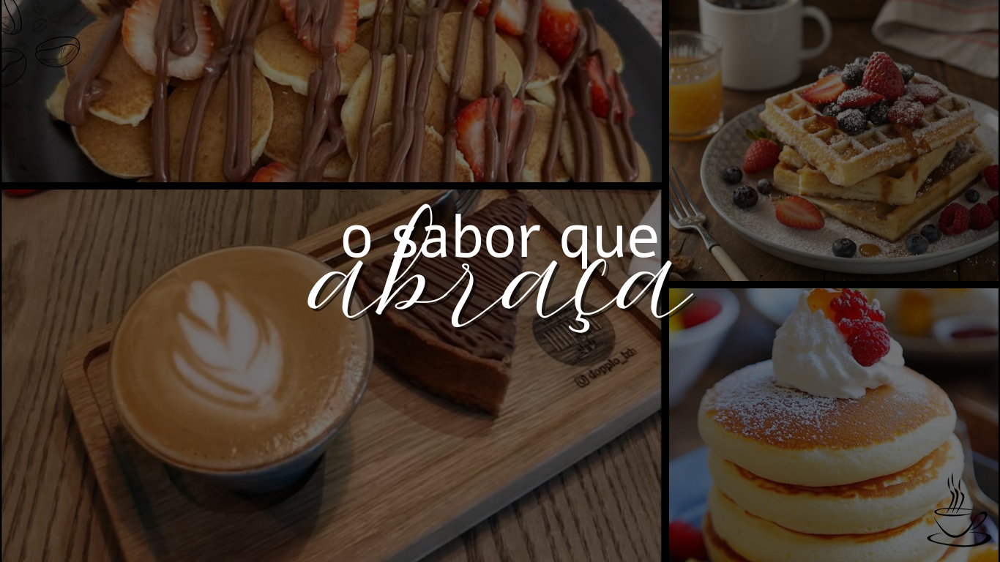

Conheça a Coffee Shop's Tia Rosa, um espaço onde o aroma do café fresco se mistura com o sabor da tradição e o carinho de um bom atendimento. Nossa missão é oferecer momentos únicos através de uma seleção especial de cafés e alimentos preparados com qualidade, cuidado e aquele toque caseiro que lembra os melhores encontros da vida.
Na Tia Rosa, você encontra uma gama completa de cafés – desde os clássicos expressos até bebidas especiais e artesanais – além de um cardápio variado de alimentos, que inclui sanduíches, salgados, bolos e outras delícias pensadas para acompanhar cada xícara.
Mais do que uma cafeteria, somos um ponto de encontro para amigos, famílias e apaixonados por café. Cada visita é um convite para relaxar, saborear e viver experiências autênticas em um ambiente acolhedor e cheio de personalidade.
Coffee Shop's Tia Rosa – Onde o café tem gosto de carinho.